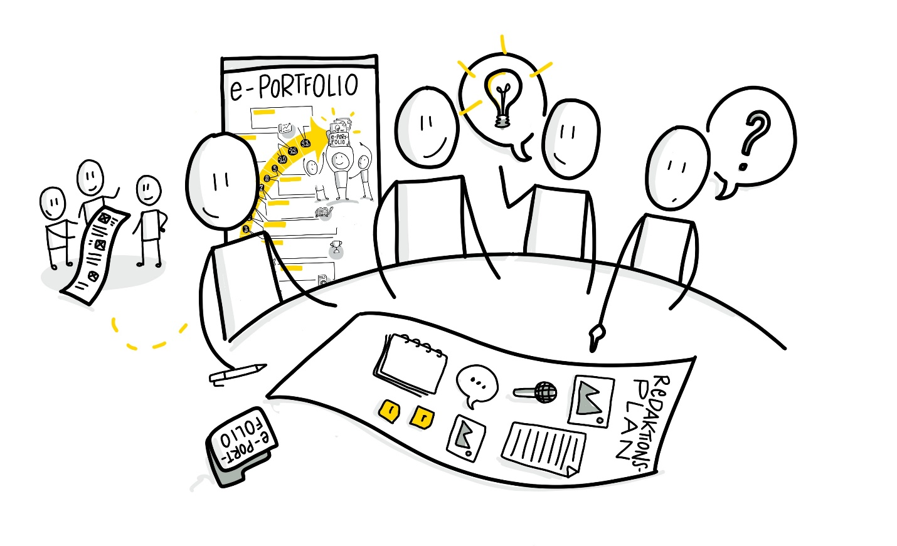

Learning area 6 - Topic plan
Learning area 6 - Topic plan
Preparation of an (editorial) topic agenda and publishing of further (reflection) posts with potential exchange (weeks 10-11; with reference to the Content Curation Circle Guide - week 9/10 content deep dive)
Structure:
Week 10
A) Exchange about the feedback of the contacts made so far B) Refine topic ideas and vote on their relevance together in a voting C) Discuss ideas for topics together and put them in a first order
Week 11 D) Presentation of the previous revised topic plan E) Taking and giving feedback F) Encourage community exchange

Week 10 - Collection of topics
A) Exchange about the feedback of the contacts made so far | (approx. 20 minutes)
In the last two weeks you have identified and contacted experts / contacts for your topic. What have you learned? How much feedback did you get? Have you gained new insights? Reflect in the group and ask each other questions in order to run through your topic as deeply and comprehensively as possible. You can use the following aspects to structure your exchange:
-
My three top experts and their core aspects
-
Listing of the most important partial aspects for my topic
-
This knowledge is (still) missing
B) Refine topic ideas and vote on their relevance together in a voting | (approx. 20 minutes)
Look together on the determined topic ideas of the past weeks. Give each other a vote on which sub-area or facet is most relevant and should therefore be tackled first or consciously at a later point. Each circle member can give up to 3 points per idea.
C) Discuss ideas for topics together and put them in a first order | (approx. 20 minutes)
By means of the voting system you can explain to each other why you have given particularly many, few or no points for certain topics. From this further discussion each of you can now draw valuable insights and conclusions for your topics and how they fit into the plan in terms of time and subject matter.
Basic kata for this week (about 1 hour):
Refine the topics from the circle and create a reconsidered order for the next week as an (editorial) plan. Begin with a first investigation and elaboration for the next upcoming topic from your point of view.
Advanced kata for this week (about 1 hour):
Think about questions that you could ask the community of your ePortfolio in the context of your topic contributions and develop further implementation ideas for the content of your future contributions (e.g. for texts, infographics or short videos).
Week 11 - Promoting exchange
D) Presentation of the previous revised topic plan | (approx 25 minutes)
On the basis of the past week you will now present your topic plans to each other in the circle and also describe the basic considerations for the order and different facets in more detail. If possible even mutual topic plans can be created. Please also explain how the circle ranking was taken into account in the voting process or why you consciously decided against it.
E) Taking and giving feedback | (approx. 15 minutes)
During or directly after the mutual presentation of the respective topic plans give each other final feedback or additional tips on the various topics. In this way you can ensure that your approach and planning is perceived as meaningful and motivating by potential visitors to your ePortfolio.
F) Encourage community exchange | (approx. 20 minutes)
Finally think together about which questions you could address to your community as part of the topic contributions in order to promote the exchange and further development of your topic. At the same time you can also develop ideas for possible measures or accompanying actions that support community feedback.
Basic kata for this week (about 1 hour):
Create your preliminary finalized editorial plan for your topics of the next months. Of course you can change it at any time if priorities for a certain topic change but it should serve as an important guideline and offer you orientation. Publish this plan or already a second post with questions to your community, if you like.
Advanced video kata for this week (about 1 to 2 hours):
Create a small video podcast episode in which you briefly introduce your topic plan and describe special features / highlights and publish it in your ePortfolio.